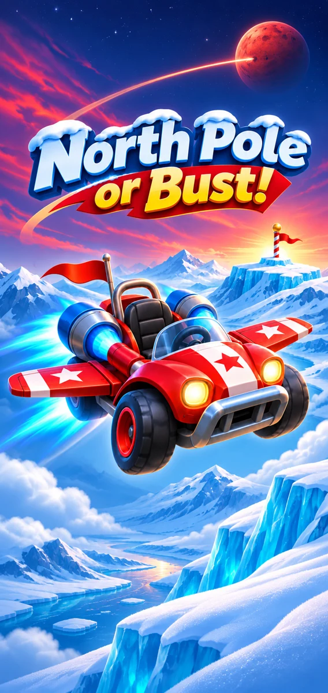
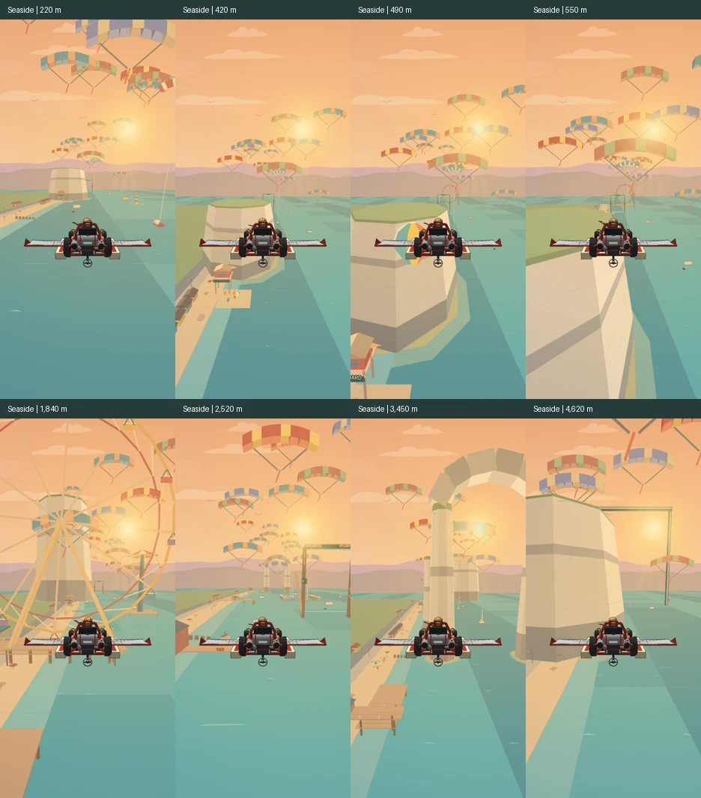

Flying adventure · In development
North Pole or Bust!
Start with a humble go-kart. Launch it into the air, upgrade your creation and see just how far you can fly.
Explore 18 campaign zones across Earth and Mars, tackle daily challenges, collect kart designs and master your flight.
Game supportPrivacy noticeIllustrated promotional artwork. Not an in-game screenshot.

Build. Upgrade. Fly.
Go further
Earn Scrap, improve your kart and learn to balance speed, altitude and fuel.
Make it yours
Unlock earned designs, chase mastery rewards and explore optional premium cosmetics.
New challenges
Put your skills to the test in daily challenges and aim for the bullseye.
Beyond the horizon
From gardens and coastlines to icy peaks and the red planet.

Development-build gameplay preview; final visuals may vary.